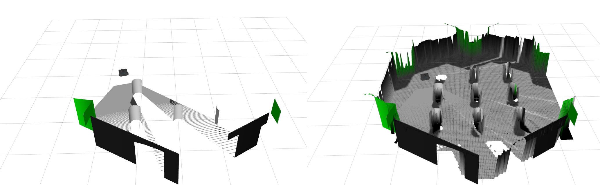

Tutorial¶
This tutorial will guide you through the basic usage of the elevation mapping cupy. You will learn how to run the plane segmentation node, the sensor node, and the TurtleBot example.
If you want to use your own custom plugins, please refer to the Plugins.
Run¶
Basic usage.
roslaunch elevation_mapping_cupy elevation_mapping_cupy.launch
For the plane segmentation node
roslaunch convex_plane_decomposition_ros convex_plane_decomposition.launch
For the sensor node
roslaunch semantic_sensor semantic_pointcloud.launch
roslaunch semantic_sensor semantic_image.launch
Run TurtleBot example¶
First, install turtlebot simulation.
sudo apt install ros-noetic-turtlebot3-gazebo ros-noetic-turtlebot3-teleop
Then, you can run the examples. For the basic version:
export TURTLEBOT3_MODEL=waffle
roslaunch elevation_mapping_cupy turtlesim_simple_example.launch
For fusing semantics into the map such as rgb from a multi modal pointcloud:
export TURTLEBOT3_MODEL=waffle
roslaunch elevation_mapping_cupy turtlesim_semantic_pointcloud_example.launch
For fusing semantics into the map such as rgb semantics or features from an image:
export TURTLEBOT3_MODEL=waffle
roslaunch elevation_mapping_cupy turtlesim_semantic_image_example.launch
Or, for the version including plane segmentation:
catkin build convex_plane_decomposition_ros
export TURTLEBOT3_MODEL=waffle
roslaunch elevation_mapping_cupy turtlesim_plane_decomposition_example.launch
To control the robot with a keyboard, a new terminal window needs to be opened. Then run
export TURTLEBOT3_MODEL=waffle
roslaunch turtlebot3_teleop turtlebot3_teleop_key.launch
Velocity inputs can be sent to the robot by pressing the keys a, w, d, x. To stop the robot completely, press s.
Errors¶
If you build with the install flag under ros melodic, you might get issues with the modules not found:
terminate called after throwing an instance of 'pybind11::error_already_set'
what(): ModuleNotFoundError: No module named 'elevation_mapping_cupy'
This is because python3 modules are installed into a different location.
This can be fixed by including also the python3 modules location in the PYTHONPATH by adding following line into the launch file:
<env name="PYTHONPATH" value="<path_to_your_install>/lib/python3/dist-packages:$(env PYTHONPATH)" />
If you get error such as
Make Error at /usr/share/cmake-3.16/Modules/FindPackageHandleStandardArgs.cmake:146 (message):
Could NOT find PythonInterp: Found unsuitable version "2.7.18", but
required is at least "3" (found /usr/bin/python)
Build with option.
catkin build elevation_mapping_cupy -DPYTHON_EXECUTABLE=$(which python3)